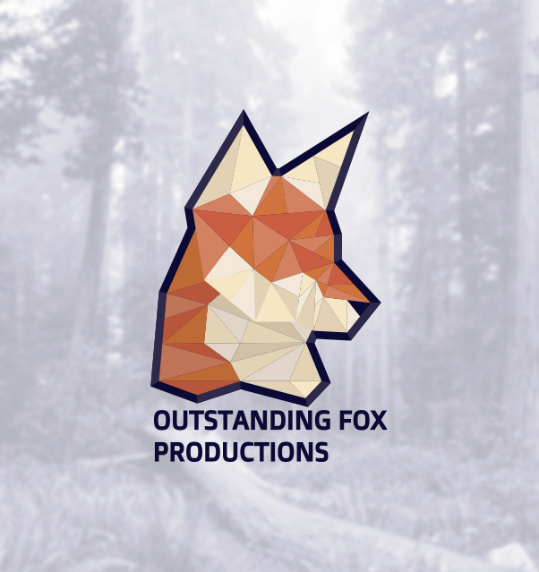
Startup cuyo propósito es unir las capacidades del diseño gráfico, programación, mantenimiento de computadoras y marketing para proporcionarle al cliente una experiencia completa en la creación de sus empresas
Clasificación:
Startup, identidad gráfica, redes sociales
Herramientas usadas:


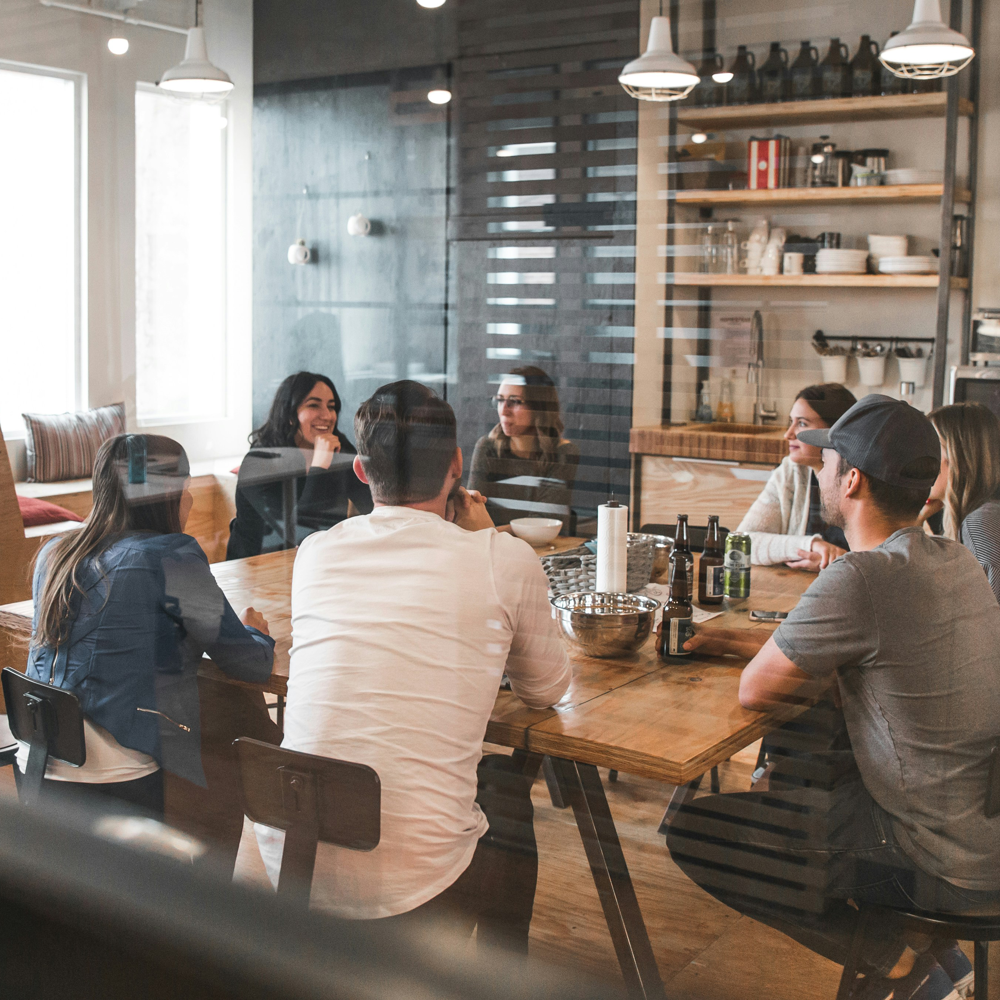
Problemática
La empresa tenía poco tiempo de haberse lanzado, tenían una identidad gráfica, pero no tenían un plan a largo plazo para marketing o uso de redes sociales (querían esperar a mejorar su marca para poderla lanzar en línea).

Solución
Se dio una propuesta alternativa a la identidad grafica de la empresa y posteriormente se planteó un programa de publicaciones semanales que invitaran a usuarios a interactuar con la página de Facebook (principalmente) apelando no solo al consumo del producto si no a la expresión y conexión con los valores y creencias de la empresa.
La base para el diseño fue el nombre de la empresa (Fox o zorro) y la variedad de servicios que esta presta. Debido a su visión la cual habla del trabajo colaborativo de diversas disciplinas , tome la decisión de representar eso con las diversas caras y tonos de naranja, la selección de color fue cuidadosa para generar una armonía, pero fue color naranja ya que ese es el color característico de la especie más popular de los Vulpes vulpes o zorros.
El margen azul fue para dar un contraste con la selección del color naranja. Este contraste es el clásico encontrado en el circulo cromático.
Las diferentes caras de color dan la ilusión de una tridimensionalidad, esto hace alusión al hecho de que la empresa tiene una visión más realista y solida sobre como apoyar a un negocio desde lo grafico hasta lo mecánico.
La tipografía fue seleccionada ya que por su diseño proviene de la tipografía usada en la máquina virtual de las computadoras, esto refleja la naturaleza digital de la empresa.
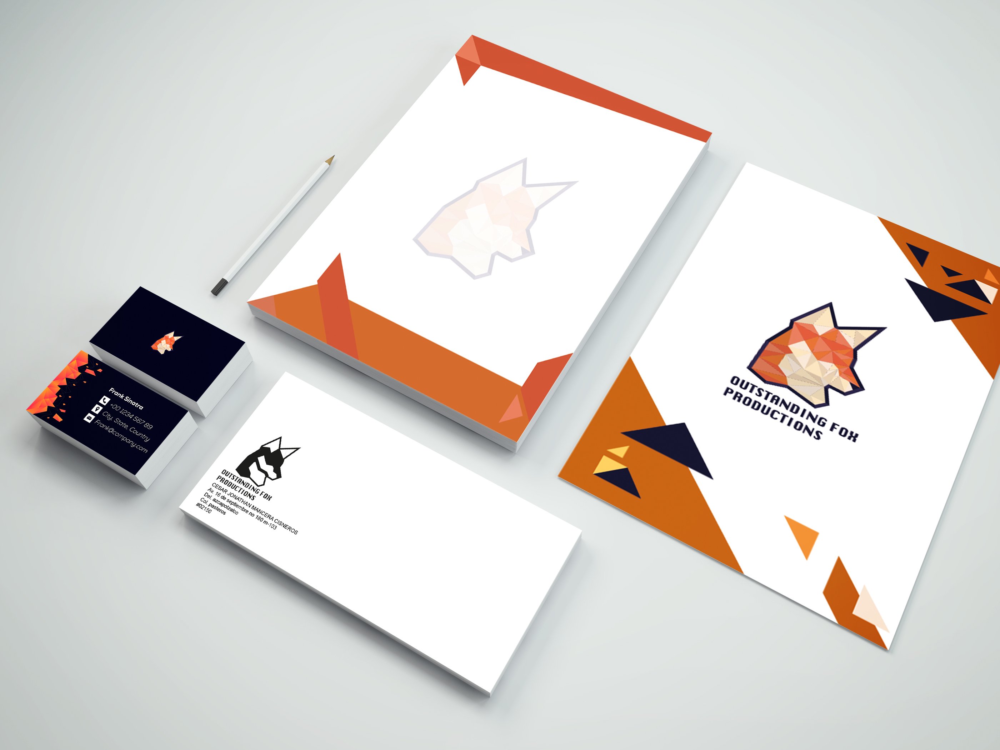
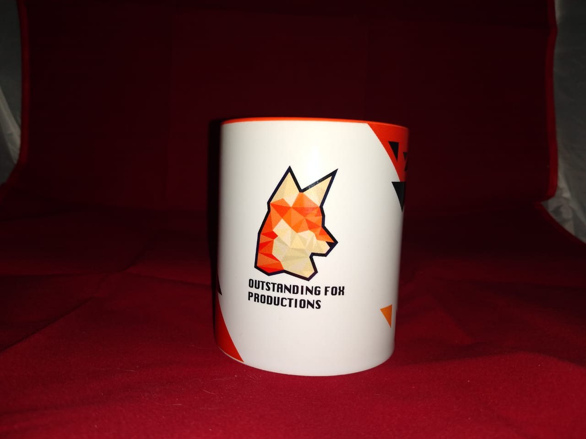
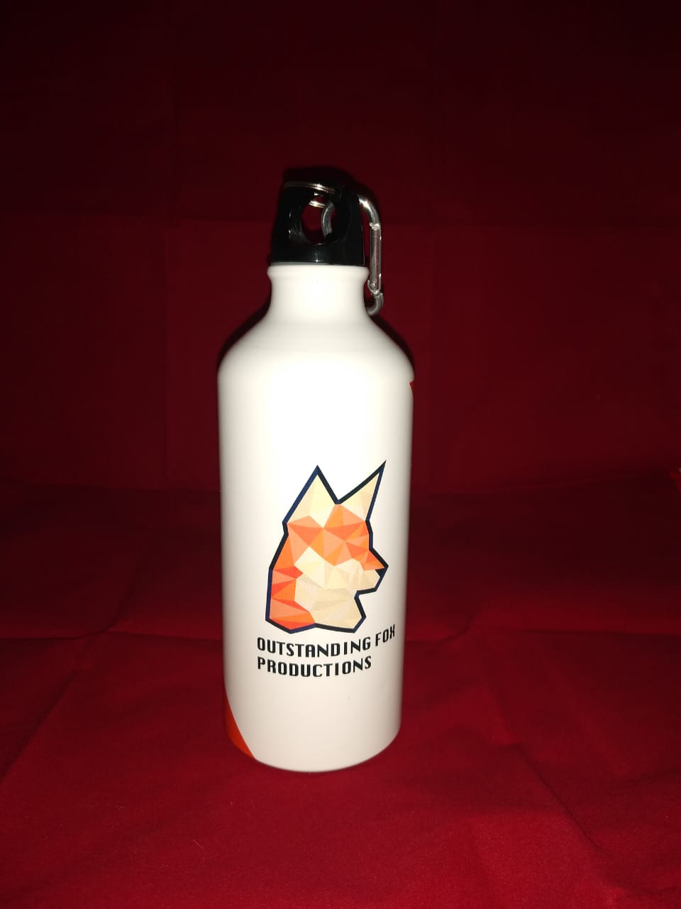
Antes de su aprobación se plasmó en diferentes aplicaciones como lo fueron una variedad de papelería y aplicaciones de merchandising como lo son tazas y termos.
Al ver que estas aplicaciones fueron exitosas, la identidad final fue aprobada y se diseñó el manual de identidad, el cual incluía los usos correctos, indebidos, registros de color y la tipografía.
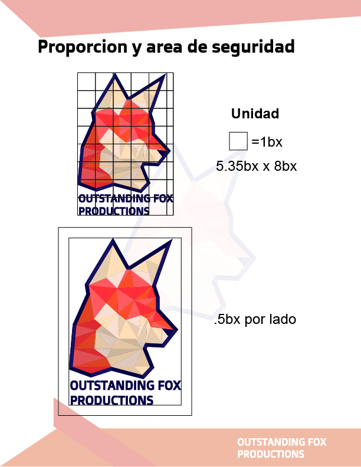
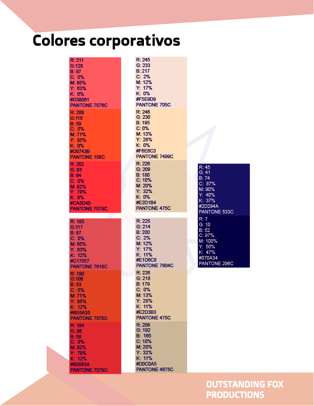
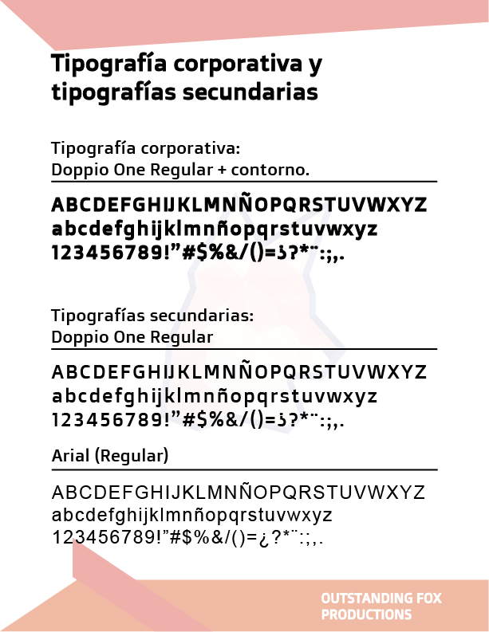
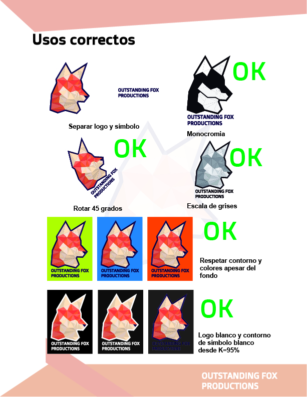
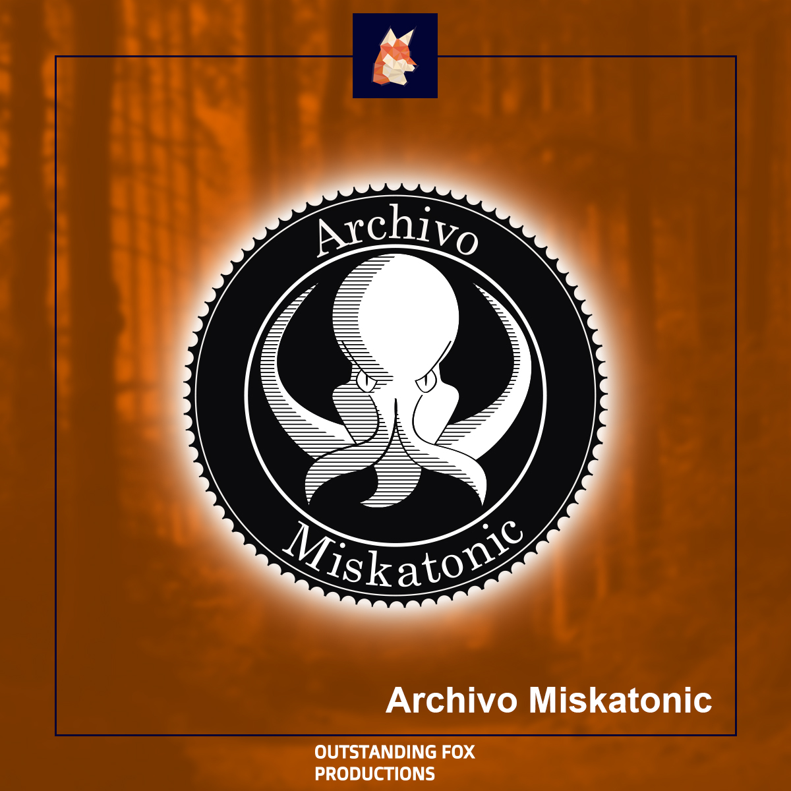
Para las redes sociales se aplicaron 4 diferentes tipos de estrategia.
La primera consto de presentar los servicios disponibles por medio de resultados. Empresas que ya habían sido ayudadas y presentar sus resultados (identidad de imagen, estrategias de marketing, resultados consiguientes) esto para presentar un historial de éxito y así brindar confianza en futuros clientes.
El segundo fue un acercamiento al cliente potencial por el lado mas humano, utilizando la comedia y los “memes” se hacían chistes sobre el proceso de diseño y de programación. En esta etapa se tomó la decisión de generar una mascota que explicara y conectara con el público.
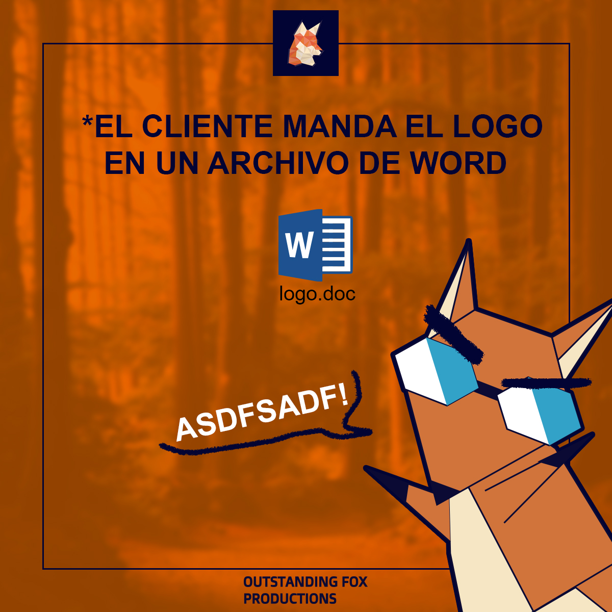
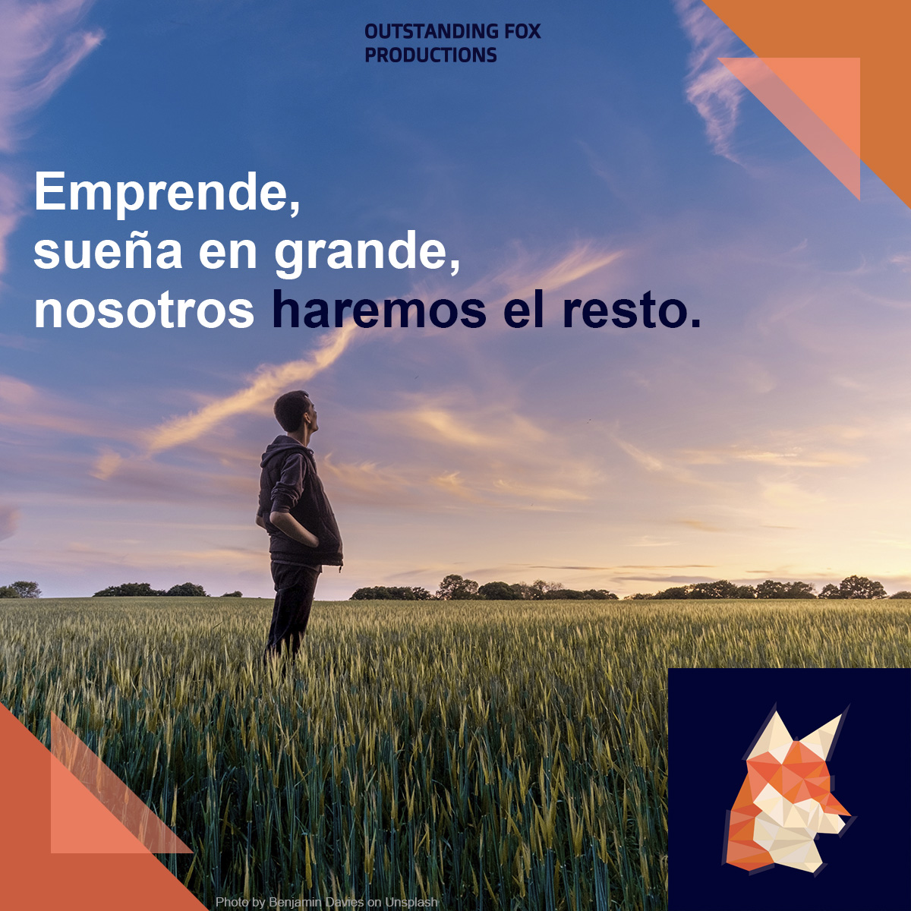
En la tercera estrategia se apeló a la emoción al usar frases motivadoras y citas de famosos que coincidieran con la visión de OUTSTANDING FOX PRODUCTION sobre la creatividad y el apoyo entre todos.
Finalmente, en la cuarta parte de la estrategia se presentaron diagramas hablando de diversos temas, estos diagramas hacían un juego visual entre sus partes y el acomodo que permite Facebook. Una gran variedad de temas se tocó en esta etapa para brindar más confianza sobre el conocimiento de estos al cliente, así como una visión rápida al proceso al cual ellos también entrarían.

+20%
Aumento de seguimiento en redes sociales.
100%
Total satisfacción de los jefes sobre la actualización de identidad grafica.
OUTSTANDING FOX PRODUCTION sigue en funcionamiento y los resultados de la campaña pueden observarse en su página de Facebook en el siguiente link:
Link de Facebook
Proyectos
Contacto: